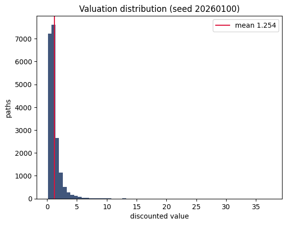
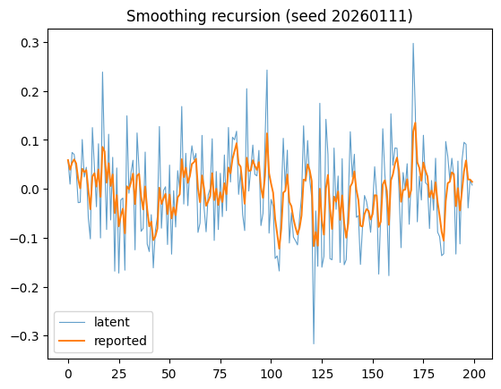

import sys, numpy as np, matplotlib.pyplot as plt
sys.path.insert(0, '..')
from engine import ch01
from engine.ch01 import SandboxParams, template
from dataclasses import replaceMFAA Chapter 1 Laboratory
Taxonomy, Cash-Flow Visualization, and the Liquidity-Adjusted Valuation Sandbox (book §1.9)
This notebook drives the same engine.ch01 module that powers the webapp and the Excel workbook — identical seeds, identical numbers. Laboratory seed: 20260100.
1. Taxonomy (A1)–(A5)
Classify each asset along the five dimensions of Definition 1.2 and read the implied modeling choices.
import pandas as pd
pd.DataFrame([{**{'asset': a['asset']}, **a['profile'], 'note': a['note']} for a in ch01.TAXONOMY])| asset | A1 | A2 | A3 | A4 | A5 | note | |
|---|---|---|---|---|---|---|---|
| 0 | Listed REIT share | False | False | False | False | False | All five fail for the share itself: a liquid w... |
| 1 | Direct commercial property | True | True | True | True | True | All five hold; the smoothing model of Section ... |
| 2 | Interval fund (private credit) | True | True | True | True | False | Hybrid: liquidity exists only at periodic wind... |
| 3 | Music-royalty stream | True | True | True | True | False | Cash flows observed on quarterly statements; l... |
| 4 | Litigation-finance contract | True | True | True | True | True | Nearest thing to a pure unspanned claim; legal... |
| 5 | Gold futures | False | False | False | False | False | Classical asset: the clean negative case. |
ch01.IMPLIED_CHOICES{'A1': 'liquidity states constrain admissible actions (Chs. 5, 13, 14)',
'A2': 'two filtrations; filtering and de-smoothing (Ch. 6)',
'A3': 'price bounds, SDF selection, nonlinear operators (Chs. 3, 4, 7)',
'A4': 'contractual payoff maps: waterfalls, covenants (Chs. 8-12)',
'A5': 'optimal stopping and control (Ch. 14)'}2. The LDCF sandbox: from number to distribution
Base configuration; the output is a valuation distribution, not a number.
p = SandboxParams() # or template('buyout'), template('private_credit'), ...
out = ch01.sandbox(p)
print(f"mean {out['mean']:.5f} se {out['se']:.5f}")
out['quantiles']mean 1.25369 se 0.00841{'q01': 0.27912603234898725,
'q05': 0.3940524194387659,
'q25': 0.6540933020989765,
'q50': 0.9469358156256389,
'q75': 1.4204142223294345,
'q95': 3.04465658961917,
'q99': 5.9496673711501975}plt.hist(out['values'], bins=60, color='#1F3864', alpha=.85)
plt.axvline(out['mean'], color='crimson', label=f"mean {out['mean']:.3f}")
plt.xlabel('discounted value'); plt.ylabel('paths'); plt.legend(); plt.title('Valuation distribution (seed 20260100)');
3. Experiments E1–E4 (assignable before any theory)
E1 — From number to distribution. Freeze everything, verify the deterministic DCF, then release risks one at a time.
for fz, label in [(("cash","rate","timing","liquidity"),'deterministic'),
(("rate","timing","liquidity"),'cash-flow risk only'),
(("timing","liquidity"),'+ rate risk'),
(("liquidity",),'+ timing risk'), ((), 'all risks')]:
s = ch01.summarize(ch01._simulate(p, frozenset(fz))['values'])
print(f"{label:24s} mean {s['mean']:.4f} std {s['std']:.4f} q05 {s['quantiles']['q05']:.4f} q95 {s['quantiles']['q95']:.4f}")deterministic mean 1.3557 std 0.0000 q05 1.3557 q95 1.3557
cash-flow risk only mean 1.3568 std 0.3265 q05 0.8859 q95 1.9453
+ rate risk mean 1.3470 std 1.1134 q05 0.3900 q95 3.3315
+ timing risk mean 1.2598 std 1.1860 q05 0.4099 q95 3.0299
all risks mean 1.2537 std 1.1898 q05 0.3941 q95 3.0447E2 — Covariation and premia. Vary ρ with λ fixed; the direction of the change in expected value is the covariation argument of §1.7.
for rho in [-0.6,-0.3,0.0,0.3,0.6]:
s = ch01.summarize(ch01._simulate(replace(p, rho=rho, M=8000))['values'])
print(f"rho {rho:+.1f} mean {s['mean']:.4f}")rho -0.6 mean 1.4218
rho -0.3 mean 1.3590
rho +0.0 mean 1.3003
rho +0.3 mean 1.2429
rho +0.6 mean 1.1863E3 — Liquidity as timing risk. Slow I→Liq and watch the left tail.
for nu in [3.0, 1.5, 0.75, 0.3]:
s = ch01.summarize(ch01._simulate(replace(p, nu_il=nu, M=8000))['values'])
print(f"nu_IL {nu:4.2f} q05 {s['quantiles']['q05']:.4f} q01 {s['quantiles']['q01']:.4f} mean {s['mean']:.4f}")nu_IL 3.00 q05 0.4009 q01 0.2807 mean 1.2673
nu_IL 1.50 q05 0.3882 q01 0.2748 mean 1.2619
nu_IL 0.75 q05 0.3631 q01 0.2457 mean 1.2493
nu_IL 0.30 q05 0.2965 q01 0.1783 mean 1.2153E4 — The opening problem, first pass. Configure the buyout template at a residual six-year horizon: at what fraction of the sandbox mean would you transact? Retain your answer for Chapters 6, 7, 13.
pb = replace(template('buyout'), T=6.0)
sb = ch01.sandbox(pb)
print(f"buyout, 6y residual: mean {sb['mean']:.4f}; q25 {sb['quantiles']['q25']:.4f} = {sb['quantiles']['q25']/sb['mean']:.0%} of mean")buyout, 6y residual: mean 0.9680; q25 0.5006 = 52% of mean4. Validation checks V1–V4
A simulation that has not passed its anchors is not evidence of anything (LOS 1.7).
val = ch01.validation_checks()
for k, d in val.items():
if isinstance(d, dict): print(k, 'PASS' if d['pass_'] else 'FAIL')
print('ALL:', val['all_pass'])V1_deterministic PASS
V2_lambda0 PASS
V3_stability PASS
V4_antithetic PASS
ALL: True5. Risk-source decomposition (Exercise 1.10) and smoothing (Exercises 1.7, 1.11)
rows = ch01.risk_decomposition(template('private_credit'), mode='isolated')
pd.DataFrame([{ 'config': r['config'], 'std': r['std'], **(r['quantiles'] or {})} for r in rows])| config | std | q01 | q05 | q25 | q50 | q75 | q95 | q99 | |
|---|---|---|---|---|---|---|---|---|---|
| 0 | all risks | 0.399917 | 0.071619 | 0.094570 | 0.165618 | 0.270453 | 0.463367 | 1.054202 | 1.998970 |
| 1 | cash risk only | 0.048906 | 0.318532 | 0.343642 | 0.385664 | 0.416904 | 0.450475 | 0.504697 | 0.544334 |
| 2 | rate risk only | 0.215086 | 0.147163 | 0.188149 | 0.278304 | 0.373058 | 0.510600 | 0.832168 | 1.180421 |
| 3 | timing risk only | 0.240162 | 0.095460 | 0.109918 | 0.187962 | 0.323412 | 0.529051 | 0.930700 | 0.930700 |
| 4 | liquidity risk only | 0.001317 | 0.413260 | 0.416265 | 0.419348 | 0.419587 | 0.419587 | 0.419587 | 0.419587 |
| 5 | interaction (all-risks std minus sum of isolated) | -0.105555 | NaN | NaN | NaN | NaN | NaN | NaN | NaN |
sm = ch01.simulate_smoothing()
print(f"variance ratio {sm['variance_ratio_sample']:.4f} (theory {sm['variance_ratio_theory']:.4f})")
print(f"rho1 {sm['rho1_sample']:.4f} (theory {sm['rho1_theory']:.4f})")
plt.plot(sm['latent'][:200], lw=.8, alpha=.7, label='latent')
plt.plot(sm['reported'][:200], lw=1.4, label='reported')
plt.legend(); plt.title('Smoothing recursion (seed 20260111)');variance ratio 0.2456 (theory 0.2500)
rho1 0.5899 (theory 0.6000)